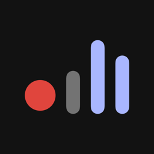
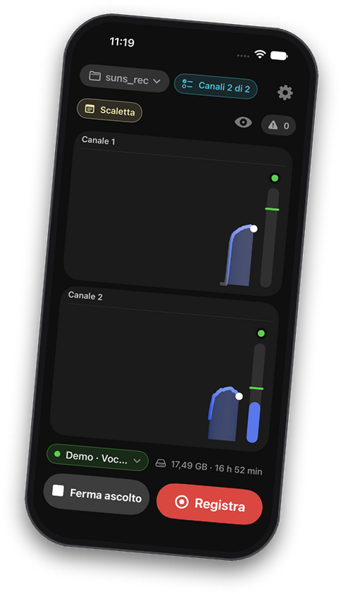
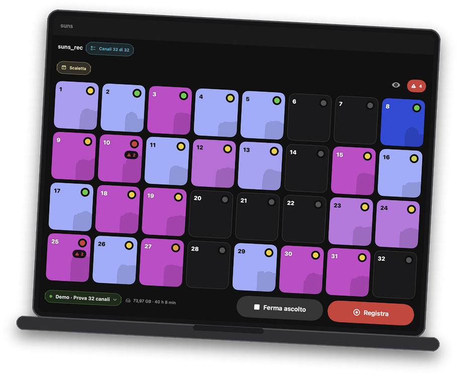
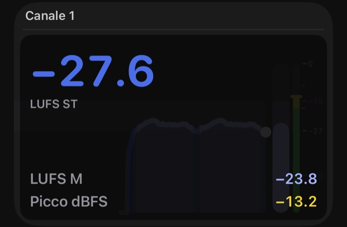

You already have a multitrack recorder in your pocket.
Plug a mixer or a USB audio interface into your device and press Record: every channel ends up in its own file. Up to 48 channels, on iPhone, iPad and Mac.




01two scenes, the same app
at the desk
You're at the mixer. You plug the USB cable into your device and see every channel, one by one. You take home the multitrack of the event, just in case.
in your backpack
A small two-input USB interface, two microphones, headphones. No computer, no mains socket. Press Record and go home with two clean tracks, ready to edit.
It's the same app. Only what you plug into it changes.
02two things to watch
There are many ways to look at audio: different scales, waveforms, analysers. All useful, for those who can read them.
But while you're recording you mainly need two things: how loud it is and whether it clipped.
suns is made to show you exactly these two.
- The colour of the channel is the loudness: how loud it sounds, roughly as the ear hears it.
- A red triangle tells you the signal went over the top, and counts how many times.
Level fine and no red triangle: you're taking home a recording ready for post-production. The rest can wait.

03more room, more you see
suns is made to always show you every channel you're recording, so you notice right away if there's a problem.
The information is always the same. But, depending on the room on the screen, each channel grows and tells you more:



ok, nice, but I want to know more
peak and clip
The peak (in dBFS) is the highest value the audio signal has reached. As on mixers, three colours (green, yellow, red) help you read the value. In the app you can pick the scale you're used to working with.
Clipping is non-negotiable: it's when the signal hits 0 dBFS, the waveform gets flattened and the distortion is there for good.
The triangle goes from grey to red, with the number of events (a tap resets it).
loudness and colours: continuous or target
Loudness (in LUFS) tells you how loud a channel sounds, closer to how we perceive it.
When you record there is no magic value to hit: it depends on what you're doing, and a voice in a studio is not a concert off a mixer. So by default the colour doesn't tell you "good" or "bad".
Continuous mode (default): from blue (quiet) to magenta (loud), in a single gradient; it tells silence from background noise.
If you do have a precise goal, switch to Target mode: pick a level range, or let suns calibrate it on your voice in 10 seconds, and the colour tells you whether you're following it.
Blue below the target, lilac inside, magenta above. Use the presets in the app or create your own range.
I want all the information possible
You can overlay the numbers on the graph and the tiles, depending on the room available: short-term loudness (LUFS ST) large, below it momentary loudness (LUFS M) and the peak in dBFS.
With the Sound engineer view, the LED is replaced by a proper peak meter, and you can add the graduated scale.
technical aside: for measurement nerds only
For those who want to know what yardstick we measure with. If you don't care, skip it all.
loudness
Measured with the ITU-R BS.1770 standard, with the K filter that weighs frequencies the way the ear hears them. "M" is the measurement over a 400 ms window, "ST" over 3 s. The unit is the LUFS.
peak
Three scales for the LED: Simple (ours), plus the EBU and SMPTE broadcast standards. Clipping is always 0 dBFS, whatever scale you choose.
files
WAV, ALAC and AAC. You choose between the rock-solid reliability of WAV, the compressed but lossless coding of ALAC, and the excellent compression of AAC to keep the space used to a minimum.
channels
1 to 48 channels, on any class-compliant USB interface or mixer (basically the ones that work without drivers, and there are plenty). One app for iPhone, iPad and Mac.
04if something goes wrong, you know right away
I can't promise nothing will ever happen. What I can tell you is that I've spent most of my time making recording reliable. And if something goes wrong, you don't find out at home: you know right away.
- If the device struggles to write data to storage, it tells you before anything is lost. If it drops samples, it tells you straight away.
- If a phone call or an alarm comes in, it closes the files and starts again by itself in a new take (I can't switch those off, but in the app I explain how to avoid them).
- With the storage almost full it stops by itself and saves the complete take.
- If you unplug the USB cable during the take, the files stay readable.
- It warns you when the battery runs low.
- It also records with the screen locked.
What it doesn't do: it doesn't record phone calls (iOS doesn't allow it), it doesn't edit, it doesn't use Bluetooth as an input.
05how it came about
suns came from a need of mine: I wanted a portable tool for small multitrack recordings. I couldn't find one, so I decided to build it myself.
Then, out of curiosity, instead of the little interface I plugged in a live mixer, to see how far it would go. To my surprise even an old phone recorded all 32 channels of an X32 without a hitch. From there suns changed: now it's a tool I carry around and plug into any USB mixer that comes my way.
06join the beta
suns is in beta: it works, I use it at work, but it still needs running in. On the beta page you'll find how to install it, what it has been tested with and what I ask in return.
No account, no cloud: the files stay on your device.